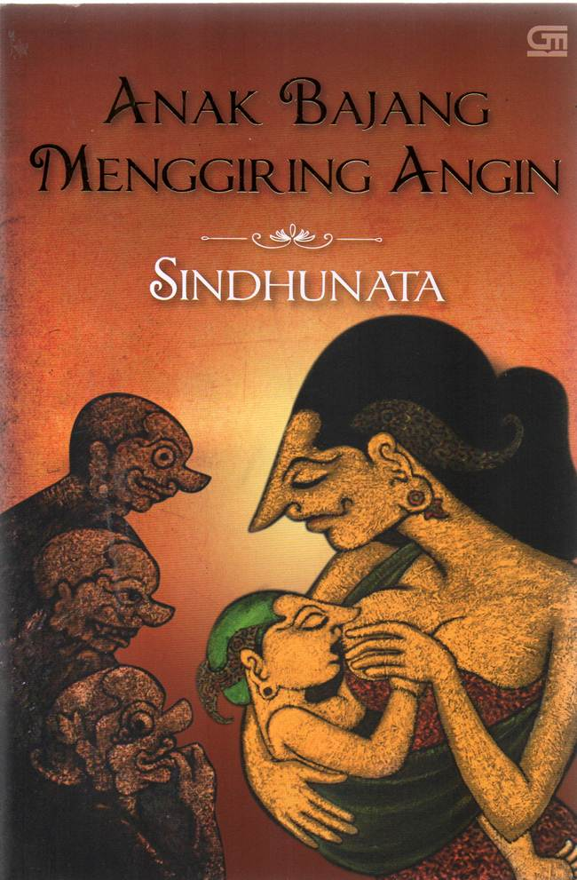
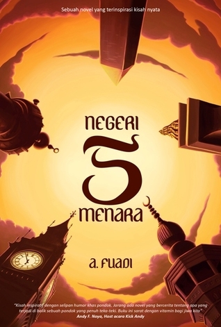
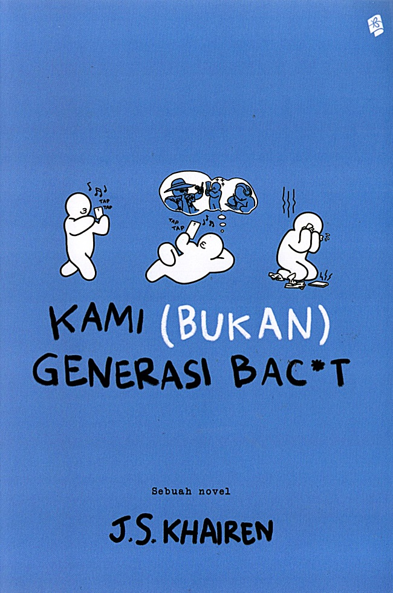

Catatan Kronik 2022
Katanya Nikah Mudah 2018
|  | NAMA | Sindhunata |
|---|---|---|
| TANGGAL LAHIR | 12 Mei 1952 | |
| NOVEL |
Anak Bajang Menggiring Angin (1983) Aburing Kupu-Kupu Kuning (1995) |
|
| SOSMED |
 |
NAMA | Andrea Hirata |
|---|---|---|
| TANGGAL LAHIR | 24 Oktober 1966 | |
| NOVEL | Laskar Pelangi (2005) Seri Dwilogi Padang Bulan |
|
| SOSMED |
|  | NAMA | Ahmad Fuadi |
|---|---|---|
| TANGGAL LAHIR | 30 Desember 1973 | |
| NOVEL | Buya Hamka Negeri 5 Menara Ranah 3 Warna |
|
| SOSMED |
|  | NAMA | J. S Khairen |
|---|---|---|
| TANGGAL LAHIR | 23 Januari 1991 | |
| NOVEL | Melangkah Kami (Bukan) Sarjana Kertas Kami (Bukan) Generasi Bac*t |
|
| SOSMED |